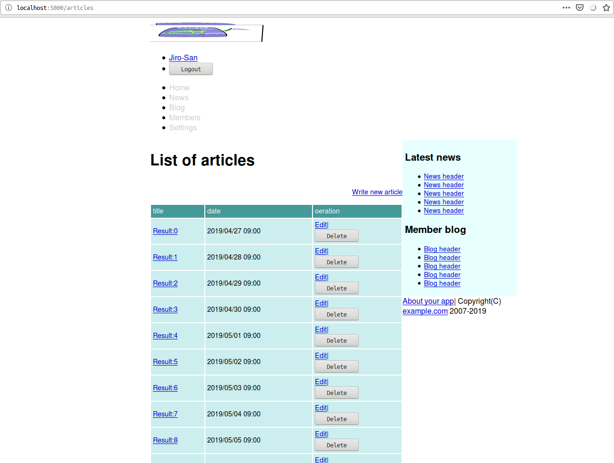
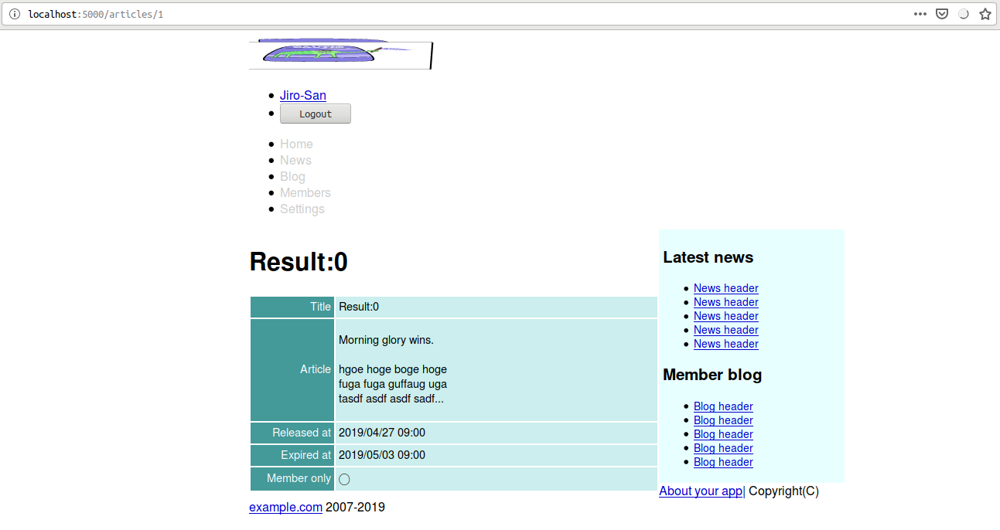
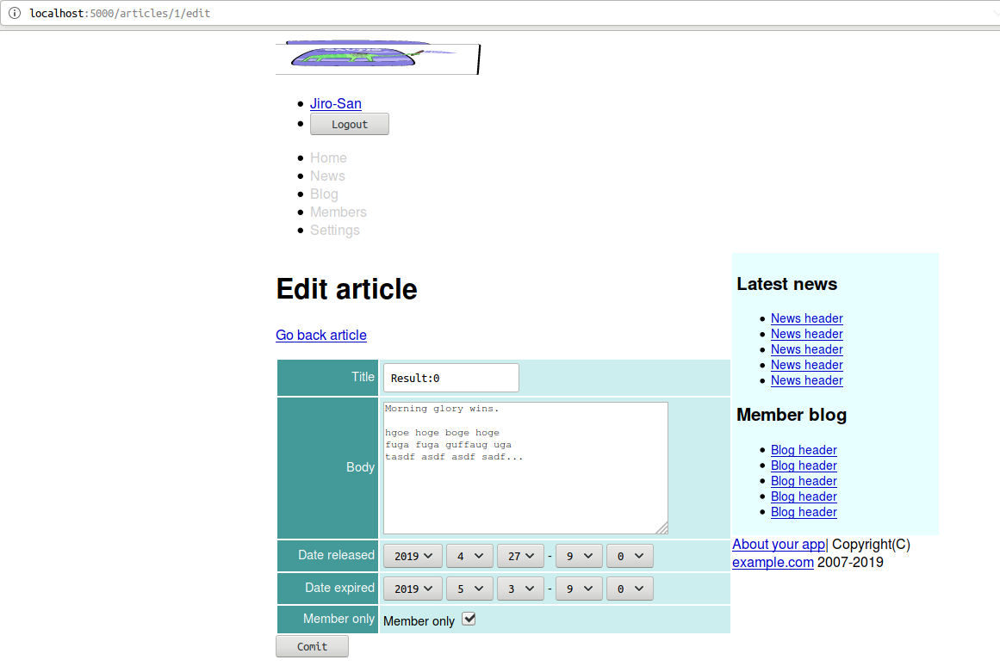

本稿は原著の各章をCommon Lispに翻訳するシリーズの第9章である。 本章ではCavemanでのScope制御を修めていく。
なお、原著ではPagenationについても触れられているが、Caveman2にそのような機能はなく、また相当するライブラリも存在しない。 どうしても欲しいなら自作するしかない。 実装コストが割と高い印象なので、ここではTODOとして無視していく。
まずは下準備として新たにarticleモデルを定義する。
(defclass article()
((title :initarg :title :col-type (:varchar 80) :accessor title-of)
(body :initarg :body :col-type :text :accessor :body-of)
(date-released :initarg :date-released :col-type :date :accessor date-released-of)
(date-expired :initarg :date-expired :col-type (or :null :date) :accessor date-expired-of)
(member-only-p :initarg :member-only-p :col-type :boolean :initform "1" ; as nil
:accessor member-only-p))
(:metaclass mito:dao-table-class))定義したモデルのテーブルを作るように編集。
(with-connection(db)
(mito:ensure-table-exists 'user)
(mito:ensure-table-exists 'article)
)シードデータを追加するように関数SEEDSの中身を編集。
(defun seeds()
(let((names #("Taro" "Jiro" "Hana" "John" "Mike" "Sophy" "Bill" "Alex" "Mary" "Tom"))
(fnames #("佐藤" "鈴木" "高橋" "田中"))
(gnames #("太郎" "次郎" "花子")))
(with-connection(db)
...
(let((body #.(with-output-to-string(*standard-output*)
(format t "Morning glory wins.~2%")
(write-line "hgoe hoge boge hoge")
(write-line "fuga fuga guffaug uga")
(write-string "tasdf asdf asdf sadf... ")))
(now(local-time:now)))
(dotimes(x 10)
(mito:create-dao 'article
:title (format nil "Result:~D"x)
:body body
:date-released (local-time:timestamp- now (- 8 x) :day)
:date-expired (local-time:timestamp- now (- 2 x) :day)
:member-only-p (zerop (rem x 3)))))
)))ARTICLEのリビルドも行えるように編集。
(defun rebuild()
(with-connection(db)
(mito:recreate-table 'user)
(mito:recreate-table 'article)
)
(seeds))REPLでREBUILDを叩いておくこと。
新規定義されたモデル用のバリデーションを追加。 正直これはマクロにまとめて、モデル定義時にバリデーションも指定できるようにするほうがいいのでは？ とも思う。 ここではそのまま手で書いていく。
(defun validate-article(article &rest target-slots)
(with-check-validate(article target-slots)
((title (:require t)
(:type string)
(:assert (<= (length title) 80)))
(body (:require t)
(:type string)
(:assert (<= (length body) 2000)))
(date-released (:require t)
(:key #'local-time:parse-timestring))
(date-expired (:key #'local-time:parse-timestring))
(member-only-p (:require t)
(:key (lambda(x)(zerop(parse-integer x))))))))下準備は整ったのでアクションを定義していこう。
indexは以下の通り。
(defroute "/articles"()
(render "articles/index.html"
`(:user ,(current-user)
:news (1 2 3 4 5)
:blogs (1 2 3 4 5)
:token ,(token)
:articles ,(mito:retrieve-dao 'your-app.model::article)
,@(roles))))index用のテンプレートは以下の通り。
{% extends "layouts/app.html" %}
{% block title %}{% lisp (title! "List of articles") %}{% endblock %}
{% block content %}
<h1>{% lisp (title!) %}</h1>
<div class="toolbar"><a href="/articles/new">Write new article</a></div>
{% if articles %}
<table class="list">
<thead>
<tr>
<th>title</th>
<th>date</th>
<th>oeration</th>
</tr>
</thead>
<tbody>
{% for article in articles %}
<tr>
<td><a href="/articles/{{article.id}}">{{article.title}}</a></td>
<td>{{ article.date-released
| date: ((:year 4)"/"(:month 2)"/"(:day 2)" "(:hour 2)":"(:min 2))
}}</td>
<td>
<a href="/articles/{{article.id}}/edit">Edit</a>|
<form action="/articles/{{article.id}}/delete" method="post">
<input type="hidden" name="AUTHENTICITY-TOKEN" value="{{token}}">
<input type="hidden" name="METHOD" value="delete">
<input type="submit" value="Delete">
</form>
</td>
</tr>
{% endfor %}
</tbody>
</table>
{% else %}
<p>No articles</p>
{% endif %}
{% endblock %}
Showは以下の通り。
(defroute "/articles/:id"(&key id)
(if(null(ignore-errors(parse-integer id)))
(myway.mapper:next-route)
(render "articles/show.html" `(:article ,(mito:find-dao 'your-app.model::article :id id)
,@(roles)
:user ,(current-user)
:news (1 2 3 4 5)
:blogs (1 2 3 4 5)
))))mywayのマッピングに於いて、上記の:idはただの変数でしかなく、不正な文字列も渡ってくる点要注意。
Cavemanにsimple_format相当の機能はない。
ここではmarkdownパーザである3bmdを使ってお手軽に実装していく。
その結果、副作用としてARTICLE本文はプレーンテクストではなくマークダウンとして解釈されることとなる。
まずはASDファイルに依存を追加。
:depends-on ("clack"
...
;; HTML Template
"djula"
"3bmd" ; markdown.
...)テンプレートは以下の通り。
{% extends "layouts/app.html" %}
{% block title %} {{ article.title | lisp: (lambda(title)(title title)) }} {% endblock %}
{% block content %}
<h1>{{article.title}}</h1>
{% if logged-in-p %}
<div class="toolbar"><a href="/articles/{{article.id}}/edit">Edit</a></div>
{% endif %}
<table class="attr">
<tr>
<th width="100">Title</th>
<td>{{article.title}}</td>
</tr>
<tr>
<th>Article</th>
<td>
{{ article.body
| lisp: (lambda(string)
(with-output-to-string(s)
(3bmd:parse-string-and-print-to-stream
(ppcre:regex-replace-all #\newline string "<br>")
s)))
| safe
}}
</td>
</tr>
<tr>
<th>Released at</th>
<td>{{ article.date-released | date: ((:year 4)"/"(:month 2)"/"(:day 2)" "(:hour 2)":"(:min 2)) }}</td>
</tr>
<tr>
<th>Expired at</th>
<td>
{% if article.date-expired %}
{{ article.date-expired | date: ((:year 4)"/"(:month 2)"/"(:day 2)" "(:hour 2)":"(:min 2)) }}
{% endif %}
</td>
</tr>
<tr>
<th>Member only</th>
<td>{% if article.member-only-p %}◯{% else %}-{% endif %}</td>
</tr>
</table>
{% endblock %}ヘッダから飛べるようにリンクを追加。
<li><a href="/">Home</a></li>
<li><a href="/articles">News</a></li>
<li><a href="#">Blog</a></li>
newは以下の通り。
(defroute "/articles/new"()
(render "articles/new.html" `(:article, (make-instance 'your-app.model::article)
:user ,(current-user)
:news (1 2 3 4 5)
:blogs (1 2 3 4 5)
,@(roles)
:token ,(token))))同様にeditは以下の通り。
(defroute "/articles/:id/edit"(&key id)
(render "articles/edit.html" `(:article ,(mito:find-dao 'your-app.model::article :id id)
:user ,(current-user)
,@(roles)
:token ,(token)
:news (1 2 3 4 5)
:blogs (1 2 3 4 5))))new用のテンプレートは以下の通り。
{% extends "layouts/app.html" %}
{% block title %} {% lisp (title! "Making new article") %} {% endblock %}
{% block content %}
<h1>{% lisp (title!) %}</h1>
<form class="new-article" id="new-article" action="/articles" method="post">
<input type="hidden" name="AUTHENTICITY-TOKEN" value="{{token}}" />
<input type="hidden" name="METHOD" value="put">
{% include "articles/form.html" %}
<div><input type="submit" name="comit" value="Comit"></div>
</form>
{% endblock %}同様にedit用のテンプレートは以下の通り。
{% extends "layouts/app.html" %}
{% block title %}{% lisp (title! "Edit article") %}{% endblock %}
{% block content %}
<h1>{% lisp (title!) %}</h1>
<p><a href="/articles/{{article.id}}">Go back article</a></p>
<form class="edit-article" id="edit-article" action="/articles/{{article.id}}" method="post">
<input type="hidden" name="AUTHENTICITY-TOKEN" value="{{token}}" />
<input type="hidden" name="METHOD" value="post">
{% include "articles/form.html" %}
<div><input type="submit" name="comit" value="Comit"></div>
</form>
{% endblock %}日時用のオプションをテンプレート側で書いていくのがだるいので関数として実装してしまおう。 Lisp側からhtmlを扱う場合、文字列として処理していくよりマークアップライブラリを使うほうが便利だ。 ここではcl-whoを使っていく。
早速ASDに追加。
;; HTML Template
"djula"
"3bmd" ; markdown.
"cl-who" ; markupヘルパー関数DATE-OPTIONSは以下の通り。
(defun date-options(&key (start 0) (end 0) (target start) labels)
(loop :for i :upfrom start :to end
:collect (cl-who:with-html-output-to-string(*standard-output*)
((:option :value i :selected (when(eql i target)
"selected"))
(princ (if labels
(aref labels i)
i))))
:into options
:finally (return (format nil "~{~A~%~}" options))))テンプレートは以下の通り。
{% include "shared/errors.html" %}
<table class="attr">
<tr>
<th><label for="title">Title</label></th>
<td><input name="TITLE" id="title" type="text" value="{{article.title}}"/></td>
</tr>
<tr>
<th><label for="body">Body</label></th>
<td><textarea rows="10" cols="45" name="BODY" id="body">{{article.body}}</textarea></td>
</tr>
<tr>
<th><label for="released-year">Date released</label></th>
<td>
<select id="released-year" name="RELEASED-YEAR">
{{ article.date-released
| lisp: (lambda(timestamp)
(let((year(local-time:timestamp-year(local-time:now))))
(date-options :start 2000 :end (1+ year)
:target (local-time:timestamp-year timestamp))))
| safe
}}
</select>
<select id="released-month" name="RELEASED-MONTH">
{{ article.date-released
| lisp: (lambda(timestamp)
(date-options :start 1 :end 12
:target (local-time:timestamp-month timestamp)))
| safe }}
</select>
<select id="released-day" name="RELEASED-DAY">
{{ article.date-released
| lisp: (lambda(timestamp)
(date-options :start 1 :end 31
:target (local-time:timestamp-day timestamp)))
| safe }}
</select>
-
<select id="released-hour" name="RELEASED-HOUR">
{{ article.date-released
| lisp: (lambda(timestamp)
(date-options :end 59 :target (local-time:timestamp-hour timestamp)))
| safe }}
</select>
<select id="released-min" name="RELEASED-MIN">
{{ article.date-released
| lisp: (lambda(timestamp)
(date-options :end 59 :target (local-time:timestamp-minute timestamp)))
| safe }}
</select>
</td>
</tr>
<tr>
<th><label for="expired-year">Date expired</label></th>
<td>
<select id="expired-year" name="EXPIRED-YEAR">
{{ article.date-expired
| lisp: (lambda(arg)
(let((year(local-time:timestamp-year(local-time:now)))
(timestamp(or arg (local-time:now))))
(date-options :start 2000 :end (1+ year)
:target (local-time:timestamp-year timestamp))))
| safe }}
</select>
<select id="expired-month" name="EXPIRED-MONTH">
{{ article.date-expired
| lisp: (lambda(arg)
(date-options :start 1 :end 12
:target (local-time:timestamp-month (or arg
(local-time:now)))))
| safe }}
</select>
<select id="expired-day" name="EXPIRED-DAY">
{{ article.date-expired
| lisp: (lambda(arg)
(let((timestamp(or arg (local-time:now))))
(date-options :start 1 :end 31
:target (local-time:timestamp-day timestamp))))
| safe }}
</select>
-
<select id="expired-hour" name="EXPIRED-HOUR">
{{ article.date-expired
| lisp: (lambda(arg)
(let((timestamp(or arg (local-time:now))))
(date-options :end 59
:target (local-time:timestamp-hour timestamp))))
| safe }}
</select>
<select id="expired-min" name="EXPIRED-MIN">
{{ article.date-expired
| lisp: (lambda(arg)
(let((timestamp(or arg (local-time:now))))
(date-options :end 59
:target (local-time:timestamp-minute timestamp))))
| safe }}
</select>
</td>
</tr>
<tr>
<th>Member only</th>
<td>
<label for="only-member">Member only</label>
<input name="ONLY-MEMBER" type="hidden" value="0">
<input type="checkbox" id="only-member" name="ONLY-MEMBER" value="1" {% if article.only-member %}checked{% endif %} />
</td>
</tr>
</table>上記テンプレートについてであるが、上記コードでは例えばarticle.date-releasedのような変数参照を起点としている。
理由は不明だが、この起点変数をarticleのようにしてオブジェクト自体を受け取るコードにすると、何故か最後のSAFEフィルターが機能しない。
おそらくはDJULA側のバグではないかと睨んでいるのだが、自信はない。

ディスパッチャは以下の通り。
(defroute("/articles" :method :post)(&key method)
(cond
((string= "put" method)(new-article(lack.request:request-body-parameters ningle:*request*)))
(t `(401()(,(format nil "Unknown method ~S"method))))))New用のpostメソッドは以下の通り。
(defroute new-article("/articles" :method :put)(&key authenticity-token released-year released-month released-day
released-hour released-min expired-year expired-month expired-day
expired-hour expired-min)
(dev:peep ningle:*request*)(force-output)
(if(not(string= authenticity-token (token)))
'(401()("Denied"))
(let((render-args `(:user ,(current-user) ,@(roles) :token ,(token) :news (1 2 3 4 5) :blogs (1 2 3 4 5))))
(multiple-value-bind(article errors)(your-app.model::validate-article
(apply #'make-instance 'your-app.model::article :allow-other-keys t
:date-released (format nil "~A-~A-~AT~A:~A:00" released-year
released-month released-day released-hour
released-min)
:date-expired (format nil "~A-~A-~AT~A:~A:00" expired-year
expired-month expired-day expired-hour
expired-min)
(request-params(lack.request:request-body-parameters ningle:*request*))))
(if errors
(render "articles/new.html" (list* :article article :errors errors render-args))
(progn (mito:insert-dao article)
(setf (gethash :notice ningle:*session*)"Stored")
`(303 (:location ,(format nil "/articles/~D"(mito:object-id article))))))))))ディスパッチャは以下の通り。
(defroute("/articles/:id" :method :post)(&key method id)
(cond
((and (string= "post" method)
(ignore-errors(parse-integer id)))
(edit-article (acons "ID" id(lack.request:request-body-parameters ningle:*request*))))
((and (string= "delete" method)
(ignore-errors(parse-integer id)))
(destroy-article (acons "ID" id (lack.request:request-body-parameters ningle:*request*))))
(t `(401()(,(format nil "Unknown method ~S"method))))))Edit用のpostメソッドは以下の通り。
(defun edit-article(request)
(destructuring-bind(&key authenticity-token id title body released-min released-hour released-day released-month
released-year expired-min expired-hour expired-day expired-month expired-year only-member
&allow-other-keys)
(request-params request)
(if(not(string= authenticity-token (token)))
'(401()("Denied"))
(if(not(hermetic:logged-in-p))
'(403()("Denied"))
(let((article(mito:find-dao 'your-app.model::article :id id)))
(setf (your-app.model::title-of article)title
(your-app.model::body-of article)body
(your-app.model::date-released-of article)(format nil"~A-~A-~AT~A:~A:00" released-year released-month
released-day released-hour released-min)
(your-app.model::date-expired-of article)(format nil"~A-~A-~AT~A:~A:00" expired-year expired-month
expired-day expired-hour expired-min)
(your-app.model::only-member-p article)only-member)
(multiple-value-bind(article errors)(your-app.model::validate-article article)
(if errors
(render "articles/edit.html" `(:article ,article :errors ,errors :user ,(current-user)
,@(roles) :token ,(token)
:news (1 2 3 4 5) :blogs (1 2 3 4 5)))
(progn (mito:save-dao article)
(setf (gethash :notice ningle:*session*)"Updated")
`(303 (:location ,(format nil "/articles/~D"(mito:object-id article))))))))))))Destroyは以下の通り。
(defroute destroy-article("/article/:id" :method :delete)(&key authenticity-token id)
(if(not(string= authenticity-token(token)))
'(401()("Denied"))
(if(not(hermetic:logged-in-p))
'(403()("Denied"))
(if(null(ignore-errors(setf id (parse-integer id))))
(myway.mapper:next-route)
(progn (mito:delete-by-values 'your-app.model::article :id id)
`(303 (:location "/articles")))))))Rubyでコールバックと呼ばれている概念（の一部？）はCommon Lispにおける補助メソッドのことであるようだ。 Common Lisp界隈では補助メソッドのことをコールバックとはけして呼ばないのでCLer的には違和感がある。
Common Lispに於いて:BEFOREメソッドは通常副作用のために用いられる。 引数の制御は:AROUNDメソッドの仕事だ。 もしこれが引数の制御ではなく、引数に不正な値が来たらエラーを投げるというような仕事であったなら:BEFOREメソッドのほうが適任であっただろうが、ここでやりたいのはそれではない。
(defmethod initialize-instance :around((o article)&rest args
&key date-released released-year released-month released-day
released-hour released-min date-expiration expired-year
expired-month expired-day expired-hour expired-min
no-expiration-p &allow-other-keys)
(apply #'call-next-method o `(,@(when (and (null date-released)
released-year)
`(:date-released ,(format nil "~A-~A-~AT~A:~A:00" released-year released-month
released-day released-hour released-min)))
,@(when (and (not no-expiration-p)
(null date-expiration)
expired-year)
`(:date-expired ,(format nil "~A-~A-~AT~A:~A:00" expired-year expired-month
expired-day expired-hour expired-min)))
,@args)))createアクションを以下のように修正。
処理の一部をCL:INITIALIZE-INSTANCEに投げたのでコードがスッキリした。
(defroute new-article("/articles" :method :put)(&key authenticity-token no-expiration-p)
(if(not(string= authenticity-token (token)))
'(401()("Denied"))
(let((render-args `(:user ,(current-user) ,@(roles) :token ,(token) :news ,(articles 5) :blogs (1 2 3 4 5))))
(multiple-value-bind(article errors)(your-app.model::validate-article
(apply #'make-instance 'your-app.model::article
(request-params(lack.request:request-body-parameters
ningle:*request*))))
(if errors
(render "articles/new.html" (list* :article article :errors errors
:no-expiration-p no-expiration-p render-args))
(progn (mito:insert-dao article)
(setf (gethash :notice ningle:*session*)"Stored")
`(303 (:location ,(format nil "/articles/~D"(mito:object-id article))))))))))クライアントが引数を送信できるように修正。
<td>
<div>
<label for="no-expiration">No expiration</label>
<input type="checkbox" {% if no-expiration-p %}checked{% endif %}
name="NO-EXPIRATION-P" id="no-expiration"/>
</div>
<div>
<select id="expired-year" name="EXPIRED-YEAR">ここで言うスコープとは記事の公開範囲を指す。
まずはヘルパーとしてPUBLICPを定義しよう。
(defun publicp(article)
(local-time:timestamp<
(date-released-of article)
(local-time:now)
(date-expired-of article)))サイドバーのテンプレートを以下のように修正。
{% for a in news %}
<li><a href="/articles/{{a.id}}">{{a.title}}</a></li>
{% endfor %}
スコープに合わせた記事リストを得るためのヘルパーを定義する。
そのための下請けとして、まずはデータベースにおける時刻の表示フォーマットを得る関数を定義。 このようなヘルパーは本来sxqlが担うべきではなかろうか。
(defun format-to-date(&optional(time(local-time:now)))
(local-time:format-timestring nil time :format '((:year 4)"-"(:month 2)"-"(:day 2))))直接必要なヘルパーは以下の通り。
(defun articles(n &key (logged-in-p(hermetic:logged-in-p))
(user(and logged-in-p (current-user))))
(if logged-in-p
(if(your-app.model::administrator-of user)
(mito:select-dao 'your-app.model::article
(sxql:order-by(:desc :date-released))(sxql:limit n))
(let((now(your-app.web::format-to-date)))
(mito:select-dao 'your-app.model::article
(sxql:where (:and (:< :date-released now)
(:< now :date-expired)))
(sxql:order-by(:desc :date-released))
(sxql:limit n))))
(let((now(your-app.web::format-to-date)))
(mito:select-dao 'your-app.model::article
(sxql:where (:and (:< :date-released now)
(:< now :date-expired)
(:= :only-member your-app.model::+false+)))
(sxql:order-by(:desc :date-released))
(sxql:limit n)))))indexアクションを以下のように修正。
(defroute "/articles"()
(render "articles/index.html"
`(:user ,(current-user)
:news ,(articles 5)
:blogs (1 2 3 4 5)
:token ,(token)
:articles ,(hermetic:auth(:administrator)
(mito:retrieve-dao 'your-app.model::article)
(articles 5))
,@(roles))))showアクションを以下のように修正。
(defroute "/articles/:id"(&key id)
(if(null(ignore-errors(parse-integer id)))
(myway.mapper:next-route)
(let((article(mito:find-dao 'your-app.model::article :id id)))
(if(find :administrator (hermetic:roles))
#0=(render "articles/show.html" `(:article ,article
,@(roles)
:token ,(token)
:user ,(current-user)
:news ,(articles 5)
:blogs (1 2 3 4 5)
))
(if(your-app.model::publicp article)
#0#
'(401()("No articles")))))))トップページも以下のように修正。
(defroute "/" ()
"Top page"
(let((articles(articles 5)))
(render #P"index.html" `(:notice ,(flash-gethash :notice ningle:*session*)
:user,(when(hermetic:logged-in-p)
(current-user))
,@(roles)
:token ,(token)
:alert ,(flash-gethash :alert ningle:*session*)
:news ,articles
:blogs (1 2 3 4 5)
:articles ,articles
)))){% block content %}
{% for article in articles %}
<h2>{{article.title}}</h2>
<p>
{{ article.body | truncatechars:80 }}
<a href="/article/{{article.id}}">More</a>
</p>
{% endfor %}
{% endblock %}バリデーションを以下のように追加。
(date-expired (:key #'local-time:parse-timestring)
(:assert (local-time:timestamp< (date-released-of article) date-expired) "Date expired too old"))TODO